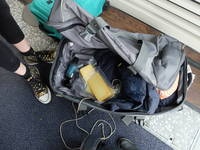
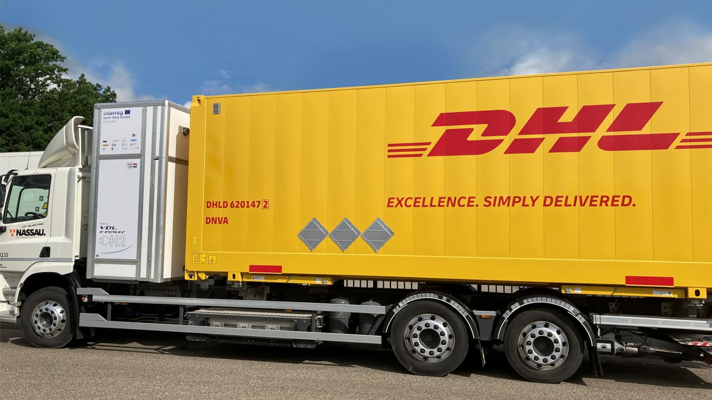

My interest in the feral comes from the vantage point of my own business. Feral Trade is an artist-run grocery business and underground freight network, trading coffee, olive oil, dried bamboo shoots and other vital goods outside official channels since 2003. All the suppliers and all of the customers come through extended social networks. Goods hitchhike in the spare baggage space of friends, colleagues and passing acquaintances, while museums, offices, hotel reception desks, and other quasi-public places act as transshipment points and depots. An operation effectively like DHL, but without any employees, vans, facilities, or attempted delivery notes and without a business plan. While money does change hands, this is almost peripheral to the commitments and relations that keep the trade in motion. Instead, the core business of Feral Trade is in forging vivid, resurgent, and sociable supply chains, outside the logic of the market.
Calling this operation feral was initially a jerk reaction to the excessive truth claims that ‘fair’ and ‘free’ trade put out. I took up the word feral as an act of triangulation, connecting ‘fair’ and ‘free’ to feral to complicate or scramble their confident affirmations. Beyond an easy play on words, I was drawn to the icon of the feral pigeon, a well-known character that gets away with making a living in the margins of urban activity worldwide. It describes a way of operating that is wilfully wild or street-wild, as opposed to romantically wild (like the wolf). In terms of trade, what this approach amounts to is not some kind of heroic or folkloric revival of artisan trade practices. Instead, it is a diy endeavor with a scavenger’s attitude to infrastructure that is inquisitive, encounter-based, opportunistic, and boundary-disregarding.
I am also aware of the more troubled connotations of the term. Beign feral is normally a status conferred from outside with a mixture of description and emotion. While its objective meaning is the gone-wild descendants of formerly domesticated creatures, it is also used as an expression of annoyance or dislike. Its characteristics include being invasive, causing diruption, being undisciplined and disorderly, ‘wandering all over the place’ as literary and historical scholar Alexis Harley puts it. By contrast, the Feral Atlas project does not make judgements of feral phenomena but considers them in context. In their careful reading, the feral is not inherently the problem but a descriptive characteristic of the unintended effects of human infrastructure projects, producing entities that thrive outside human control.
Yet it is in this mixed messaging, its ambivalent character, that the feral gets interesting. Engaged outside its usual stamping ground of the nature/culture divide, Iam intrigued by its potential to run interference in that other super-naturalized domain of business. As a category that puts pressure on the idea of nature, in Harley’s words, it applies stubborn resistance to a naturalized business ideology with its jungle laws of expedition, competition, and Darwinian survival. At the same time, the feral also signals adeparture from the weighty imperatives in social and ethical business to always be ‘good’ or do right. That an individual enterprise or even a sector could be sustainable or responsible in an unsustainable, irresponsible system is implausible, as ecological thinkers and action research business scholars Judi Marshall, Peter Reason, and Gillian Coleman underline. We need some more down-to-earth assignments.
In this, I consider the feral as an opportune agent for our times: a scrappy role model, perhaps one-legged, poised to seek out the chinks in seeming impermeable yet arguable plentiful systems. An exemplar for living and working the cracks—being wild amongst, not wild apart—with a management style that might bew ell suited for the troubled planetary relations in which we find ourselves.